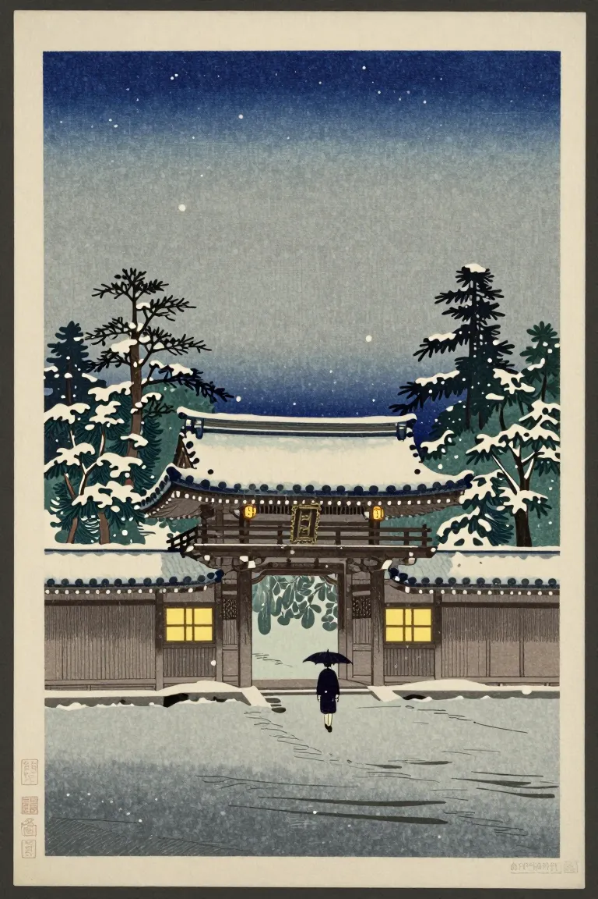

The publisher Watanabe Shozaburo revived the ukiyo-e split of designer, carver and printer for foreign buyers. The prints show Western light and atmosphere, with many tonal blocks for rain, snow and dusk.

Core thesis
The old Edo craft of block and baren can serve a new subject, a landscape with weather and light, when a publisher keeps the three trades apart.
Design principles
Choose a quiet place, a river, a temple, a snow road, and one moment of light such as rain, dusk or a lamp.
Build the sky and the water from 3–6 blue and grey blocks, each wiped to a soft gradation.
Use 8–12 colour blocks for one print, and let some prints reach 30 blocks.
Print a lamp or a window in a warm orange against a cool blue ground, and keep it small.
Add rubbed texture with a baren on a dry, thick sheet (suji-zuri and goma-zuri) for snow, bark and fabric.
Keep the key line thin and brown or grey, not a hard black outline.
Add the artist seal and the publisher seal in the margin.